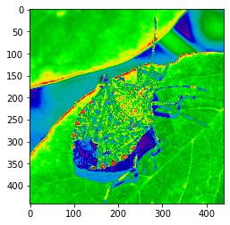
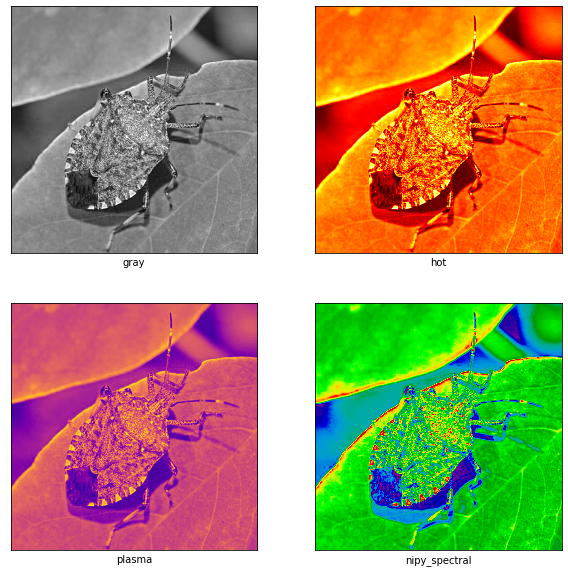

이미지 데이터의 시각화
5.2. 이미지 데이터의 시각화#
numpy의 설치
가상환경의 선택
conda install numpy Anaconda 설치 경로의 확인:
벡터와 행렬의 생성 numpy.array (1) 리스트를 이용한 벡터의 생성 (2) numpy.zeros(), numpy.ones() (3) numpy.repeat() (4) 리스트를 이용한 행렬의 생성 (5) 대각행렬 생성하기 (numpy.diag())
벡터와 행렬의 형태 변환 (1) shape 이해하기 (2) reshape 이해하기 (order = ‘C’ or ‘F’)
import PIL
import urllib
import numpy as np
import matplotlib.pyplot as plt
'''5-2-1 이미지 데이터의 구조'''
# 예제 1 RGB 이미지 데이터
img_raw = PIL.Image.open(urllib.request.urlopen("http://ranking.uos.ac.kr/class/VIS/data/stinkbug.jpeg"))
plt.imshow(img_raw)
<matplotlib.image.AxesImage at 0x296b394fe20>
img = np.array(img_raw)
print("Type of img is ", type(img))
print("Shape of img is ", img.shape) # H-W-C
print("dtype is", img.dtype)
img[100:103,120:130,0]
Type of img is <class 'numpy.ndarray'>
Shape of img is (441, 440, 3)
dtype is uint8
array([[139, 140, 141, 142, 142, 142, 142, 141, 136, 136],
[136, 138, 140, 141, 142, 142, 141, 140, 136, 135],
[136, 137, 138, 139, 140, 141, 140, 140, 136, 136]], dtype=uint8)
# 예제 2 gray scale 이미지 데이터
gray_img_raw = PIL.Image.open(urllib.request.urlopen("http://ranking.uos.ac.kr/class/VIS/data/stinkbug_gray.png"))
plt.imshow(gray_img_raw)
<matplotlib.image.AxesImage at 0x296b3a31280>
gray_img = np.array(gray_img_raw)
print(gray_img)
print("Type of img is ", type(gray_img))
print("Shape of img is ", gray_img.shape)
print("dtype is", gray_img.dtype)
plt.imshow(gray_img, cmap="gray")
[[119 118 118 ... 99 100 104]
[118 117 117 ... 98 99 100]
[116 116 115 ... 99 99 97]
...
[123 127 127 ... 122 121 110]
[120 126 128 ... 118 120 108]
[121 123 126 ... 113 118 115]]
Type of img is <class 'numpy.ndarray'>
Shape of img is (441, 440)
dtype is uint8
<matplotlib.image.AxesImage at 0x296b3aa9d60>

'''5-2-2 matplotlib을 활용한 이미지 데이터 처리'''
fig, ax = plt.subplots()
ax.imshow(img[:,:,0])
<matplotlib.image.AxesImage at 0x296b39e1c10>
fig, ax = plt.subplots(1,3, figsize = (15,7.5))
ax[0].imshow(img[:,:,0])
ax[1].imshow(img[:,:,0], cmap ='plasma')
ax[2].imshow(img[:,:,0], cmap ='hot')
<matplotlib.image.AxesImage at 0x296b4be3430>
plt.imshow(img[:,:,0], cmap ='plasma')
<matplotlib.image.AxesImage at 0x296b4c8f430>
imgplot = plt.imshow(img[:,:,0], cmap ='plasma')
imgplot.set_cmap("nipy_spectral")

#%% 여러 이미지를 서브플롯으로 그리기
fig, axes = plt.subplots(2, 2, figsize=(10, 10))
for i, cmap in enumerate(["gray", "hot", "plasma", "nipy_spectral"]):
r = i // 2; c = i % 2
axes[r][c].imshow(img[:,:,0], cmap=cmap)
axes[r][c].set_xlabel(cmap)
axes[r][c].set_xticks([])
axes[r][c].set_yticks([])

fig, ax = plt.subplots()
m = ax.imshow(img[:,:,0], cmap ='plasma')
# mapping colorbar to the image m
plt.colorbar(m)
<matplotlib.colorbar.Colorbar at 0x296b4e9bee0>

fig = plt.figure()
ax = fig.add_subplot(1,2,1)
imgplot = plt.imshow(img[:,:,0]/255, cmap ='plasma')
ax.set_title("A")
plt.colorbar(ticks = [0, 0.3, 0.5, 0.7], orientation = 'horizontal')
<matplotlib.colorbar.Colorbar at 0x296b4f78340>
'''5-2-3 이미지 데이터 변형하고 시각화하기'''
# Crop
img_crop = img[100:350, 100:350, :]
print(f"Cropped Image shape: {img_crop.shape}")
plt.imshow(img_crop)
Cropped Image shape: (250, 250, 3)
<matplotlib.image.AxesImage at 0x296b4d14a00>
#%% Horizontal Flip
img_horiz = np.fliplr(img)
plt.imshow(img_horiz)
<matplotlib.image.AxesImage at 0x296b4d24790>
#%% Vertical Flip
img_vert = np.flipud(img)
plt.imshow(img_vert)
<matplotlib.image.AxesImage at 0x296b503a580>
#%% 90 Rotation
img_rot = np.rot90(img)
plt.imshow(img_rot)
<matplotlib.image.AxesImage at 0x296b520d3a0>
#%% Concat Image
img_concat1 = np.concatenate([img, img], axis=0)
print(f"Concatenated Image shape: {img_concat1.shape}")
plt.imshow(img_concat1)
Concatenated Image shape: (882, 440, 3)
<matplotlib.image.AxesImage at 0x296b527d6a0>
#%%
img_concat2 = np.concatenate([img, img], axis=1)
print(f"Concatenated Image shape: {img_concat2.shape}")
plt.imshow(img_concat2)
Concatenated Image shape: (441, 880, 3)
<matplotlib.image.AxesImage at 0x296b52f21c0>
#%% Interpolate Image
img_resize = cv2.resize(img, (50, 50))
print(f"Resized Image shape: {img_resize.shape}")
plt.imshow(img_resize)
---------------------------------------------------------------------------
NameError Traceback (most recent call last)
c:\Users\User\Documents\GitHub\visualization\chapters\05\image.ipynb 셀 21 in <cell line: 2>()
<a href='vscode-notebook-cell:/c%3A/Users/User/Documents/GitHub/visualization/chapters/05/image.ipynb#X26sZmlsZQ%3D%3D?line=0'>1</a> #%% Interpolate Image
----> <a href='vscode-notebook-cell:/c%3A/Users/User/Documents/GitHub/visualization/chapters/05/image.ipynb#X26sZmlsZQ%3D%3D?line=1'>2</a> img_resize = cv2.resize(img, (50, 50))
<a href='vscode-notebook-cell:/c%3A/Users/User/Documents/GitHub/visualization/chapters/05/image.ipynb#X26sZmlsZQ%3D%3D?line=2'>3</a> print(f"Resized Image shape: {img_resize.shape}")
<a href='vscode-notebook-cell:/c%3A/Users/User/Documents/GitHub/visualization/chapters/05/image.ipynb#X26sZmlsZQ%3D%3D?line=3'>4</a> plt.imshow(img_resize)
NameError: name 'cv2' is not defined
#%% Normalization
channel_min = np.array([np.min(img[:,:,i]) for i in range(3)])
channel_max = np.array([np.max(img[:,:,i]) for i in range(3)])
normalized_img = (img - channel_min) / channel_max
plt.imshow(normalized_img)
print(img)
print(normalized_img)
[[[129 168 61]
[129 166 60]
[129 166 60]
...
[102 146 49]
[105 146 50]
[109 150 54]]
[[128 167 60]
[127 166 59]
[128 165 59]
...
[102 146 48]
[104 145 49]
[105 146 50]]
[[126 165 59]
[126 165 59]
[126 163 58]
...
[104 146 48]
[104 146 48]
[102 143 47]]
...
[[133 161 76]
[137 165 80]
[137 165 81]
...
[127 157 83]
[126 156 82]
[116 144 70]]
[[129 158 74]
[135 164 80]
[137 164 83]
...
[123 153 79]
[125 156 80]
[115 143 68]]
[[130 159 75]
[131 160 78]
[134 163 83]
...
[118 149 73]
[123 154 78]
[122 150 73]]]
[[[0.50588235 0.65882353 0.23921569]
[0.50588235 0.65098039 0.23529412]
[0.50588235 0.65098039 0.23529412]
...
[0.4 0.57254902 0.19215686]
[0.41176471 0.57254902 0.19607843]
[0.42745098 0.58823529 0.21176471]]
[[0.50196078 0.65490196 0.23529412]
[0.49803922 0.65098039 0.23137255]
[0.50196078 0.64705882 0.23137255]
...
[0.4 0.57254902 0.18823529]
[0.40784314 0.56862745 0.19215686]
[0.41176471 0.57254902 0.19607843]]
[[0.49411765 0.64705882 0.23137255]
[0.49411765 0.64705882 0.23137255]
[0.49411765 0.63921569 0.22745098]
...
[0.40784314 0.57254902 0.18823529]
[0.40784314 0.57254902 0.18823529]
[0.4 0.56078431 0.18431373]]
...
[[0.52156863 0.63137255 0.29803922]
[0.5372549 0.64705882 0.31372549]
[0.5372549 0.64705882 0.31764706]
...
[0.49803922 0.61568627 0.3254902 ]
[0.49411765 0.61176471 0.32156863]
[0.45490196 0.56470588 0.2745098 ]]
[[0.50588235 0.61960784 0.29019608]
[0.52941176 0.64313725 0.31372549]
[0.5372549 0.64313725 0.3254902 ]
...
[0.48235294 0.6 0.30980392]
[0.49019608 0.61176471 0.31372549]
[0.45098039 0.56078431 0.26666667]]
[[0.50980392 0.62352941 0.29411765]
[0.51372549 0.62745098 0.30588235]
[0.5254902 0.63921569 0.3254902 ]
...
[0.4627451 0.58431373 0.28627451]
[0.48235294 0.60392157 0.30588235]
[0.47843137 0.58823529 0.28627451]]]
#%% Standardization
channel_mean = np.array([np.mean(img[:,:,i]) for i in range(3)])
channel_std = np.array([np.std(img[:,:,i]) for i in range(3)])
standardized_img = (img - channel_mean) / channel_std
plt.imshow(standardized_img)
print(img)
print(standardized_img)
Clipping input data to the valid range for imshow with RGB data ([0..1] for floats or [0..255] for integers).
[[[129 168 61]
[129 166 60]
[129 166 60]
...
[102 146 49]
[105 146 50]
[109 150 54]]
[[128 167 60]
[127 166 59]
[128 165 59]
...
[102 146 48]
[104 145 49]
[105 146 50]]
[[126 165 59]
[126 165 59]
[126 163 58]
...
[104 146 48]
[104 146 48]
[102 143 47]]
...
[[133 161 76]
[137 165 80]
[137 165 81]
...
[127 157 83]
[126 156 82]
[116 144 70]]
[[129 158 74]
[135 164 80]
[137 164 83]
...
[123 153 79]
[125 156 80]
[115 143 68]]
[[130 159 75]
[131 160 78]
[134 163 83]
...
[118 149 73]
[123 154 78]
[122 150 73]]]
[[[ 0.07348513 0.6123555 -0.04787803]
[ 0.07348513 0.56583388 -0.07580722]
[ 0.07348513 0.56583388 -0.07580722]
...
[-0.60528524 0.10061764 -0.38302827]
[-0.52986631 0.10061764 -0.35509909]
[-0.42930774 0.19366088 -0.24338234]]
[[ 0.04834549 0.58909469 -0.07580722]
[ 0.02320584 0.56583388 -0.1037364 ]
[ 0.04834549 0.54257307 -0.1037364 ]
...
[-0.60528524 0.10061764 -0.41095746]
[-0.55500596 0.07735682 -0.38302827]
[-0.52986631 0.10061764 -0.35509909]]
[[-0.0019338 0.54257307 -0.1037364 ]
[-0.0019338 0.54257307 -0.1037364 ]
[-0.0019338 0.49605144 -0.13166559]
...
[-0.55500596 0.10061764 -0.41095746]
[-0.55500596 0.10061764 -0.41095746]
[-0.60528524 0.0308352 -0.43888665]]
...
[[ 0.17404371 0.44952982 0.37105977]
[ 0.27460228 0.54257307 0.48277652]
[ 0.27460228 0.54257307 0.51070571]
...
[ 0.02320584 0.35648657 0.56656408]
[-0.0019338 0.33322576 0.5386349 ]
[-0.25333023 0.05409601 0.20348465]]
[[ 0.07348513 0.37974738 0.3152014 ]
[ 0.22432299 0.51931225 0.48277652]
[ 0.27460228 0.51931225 0.56656408]
...
[-0.07735273 0.26344332 0.45484734]
[-0.02707344 0.33322576 0.48277652]
[-0.27846988 0.0308352 0.14762628]]
[[ 0.09862478 0.40300819 0.34313059]
[ 0.12376442 0.42626901 0.42691815]
[ 0.19918335 0.49605144 0.56656408]
...
[-0.20305095 0.17040007 0.28727221]
[-0.07735273 0.28670413 0.42691815]
[-0.10249237 0.19366088 0.28727221]]]
#%% Random Noise Contaminate
h, w = img.shape[:2]
noise = np.random.randint(0,100,(h, w, 1))
img_conta = img + noise
plt.imshow(img_conta)
Clipping input data to the valid range for imshow with RGB data ([0..1] for floats or [0..255] for integers).
<matplotlib.image.AxesImage at 0x296b7e65610>
#%% Synthsize Image
source = img[15: ,93:390, :]
plt.imshow(source)
#%%
source_resize = cv2.resize(source, (120, 120))
plt.imshow(source_resize)
#%%
source_flip = np.fliplr(source_resize)
plt.imshow(source_flip)
#%%
source1 = np.concatenate([source_flip, source_resize], axis=0)
plt.imshow(source1)
#%%
source2 = np.concatenate([source_resize, source_flip], axis=1)
plt.imshow(source2)
#%%
synth_img = img.copy()
synth_img[0:source2.shape[0], 0:source2.shape[1], :] = source2
synth_img[synth_img.shape[0] - source1.shape[0]:, synth_img.shape[1] - source1.shape[1]:, :] = source1
plt.imshow(synth_img)
---------------------------------------------------------------------------
NameError Traceback (most recent call last)
c:\Users\User\Documents\GitHub\visualization\chapters\05\image.ipynb 셀 25 in <cell line: 5>()
<a href='vscode-notebook-cell:/c%3A/Users/User/Documents/GitHub/visualization/chapters/05/image.ipynb#X33sZmlsZQ%3D%3D?line=2'>3</a> plt.imshow(source)
<a href='vscode-notebook-cell:/c%3A/Users/User/Documents/GitHub/visualization/chapters/05/image.ipynb#X33sZmlsZQ%3D%3D?line=3'>4</a> #%%
----> <a href='vscode-notebook-cell:/c%3A/Users/User/Documents/GitHub/visualization/chapters/05/image.ipynb#X33sZmlsZQ%3D%3D?line=4'>5</a> source_resize = cv2.resize(source, (120, 120))
<a href='vscode-notebook-cell:/c%3A/Users/User/Documents/GitHub/visualization/chapters/05/image.ipynb#X33sZmlsZQ%3D%3D?line=5'>6</a> plt.imshow(source_resize)
<a href='vscode-notebook-cell:/c%3A/Users/User/Documents/GitHub/visualization/chapters/05/image.ipynb#X33sZmlsZQ%3D%3D?line=7'>8</a> #%%
NameError: name 'cv2' is not defined